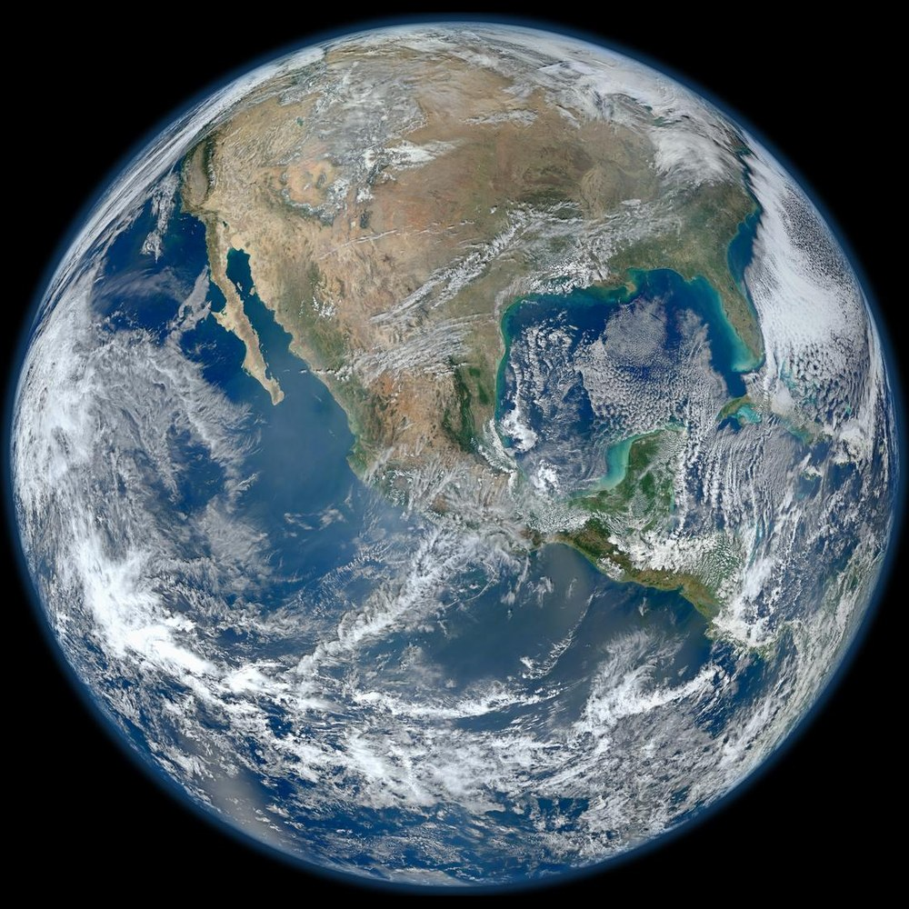

Cosmology · Planetary science · Grades 6–10
Earth: a planet built for possibility
Earth is not “perfect” in the sense of being safe everywhere. It is dynamic, sometimes dangerous, and always changing. Yet its orbit, water, atmosphere, geology, and living systems create an extraordinary range of habitable places—and the raw materials for societies to grow.
Driving question: Which Earth system would change life most if it vanished tomorrow?
Interactive infographic
Turn the world; follow the connections
Drag to orbit, pinch or scroll to zoom, then choose a system. The pins are starting points, not boundaries: every system overlaps the others.
A habitable recipe
Life needs a neighborhood, not one magic ingredient
Test a deliberately simplified thought experiment. Real planets are more complicated: these factors interact, and researchers are still learning which combinations can support life elsewhere.
MODEL STATUS
From planet to people
Earth’s materials become civilization
Natural systems do not automatically produce a fair or sustainable society. People make choices about power, access, technology, and care. Click a thread to trace a physical gift from Earth to a human possibility—and a responsibility.
A changed point of view
One small world in a very large sky
Earthrise, first witnessed by the Apollo 8 crew on December 24, 1968, shifted how many people saw our planet: immense to us, fragile at cosmic scale. Explore its systems, then ask how we should care for the shared home they make possible.
Next: explore Earth, the Sun, and seasons · Try the climate systems simulator

Ask a better question
“Perfect for life” is a poetic phrase, not a scientific conclusion. A better question is: Which measurable conditions make a planet more likely to sustain liquid water, complex chemistry, and long-lived ecosystems?
Explore further: NASA Earth facts · NASA Earth Observatory · USGS Earthquake Hazards.